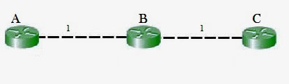
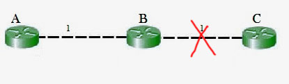
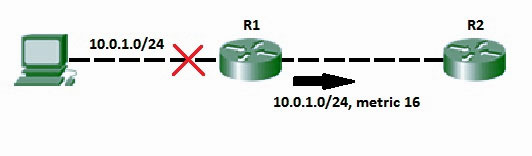
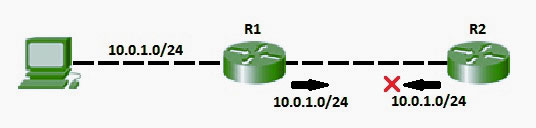

The main issue with Distance Vector Routing (DVR) protocols is Routing Loops, since Bellman-Ford Algorithm cannot prevent loops. This routing loop in DVR network causes Count to Infinity Problem. Routing loops usually occur when any interface goes down or two-routers send updates at the same time.
Counting to infinity problem:

So in this example, the Bellman-Ford algorithm will converge for each router, they will have entries for each other. B will know that it can get to C at a cost of 1, and A will know that it can get to C via B at a cost of 2.

If the link between B and C is disconnected, then B will know that it can no longer get to C via that link and will remove it from it’s table. Before it can send any updates it’s possible that it will receive an update from A which will be advertising that it can get to C at a cost of 2. B can get to A at a cost of 1, so it will update a route to C via A at a cost of 3. A will then receive updates from B later and update its cost to 4. They will then go on feeding each other bad information toward infinity which is called as Count to Infinity problem.
Solution for Count to Infinity problem:-
Route Poisoning:
When a route fails, distance vector protocols spread the bad news about a route failure by poisoning the route. Route poisoning refers to the practice of advertising a route, but with a special metric value called Infinity. Routers consider routes advertised with an infinite metric to have failed. Each distance vector routing protocol uses the concept of an actual metric value that represents infinity. RIP defines infinity as 16. The main disadvantage of poison reverse is that it can significantly increase the size of routing announcements in certain fairly common network topologies.

Split horizon:
If the link between B and C goes down, and B had received a route from A , B could end up using that route via A. A would send the packet right back to B, creating a loop. But according to Split horizon Rule, Node A does not advertise its route for C (namely A to B to C) back to B. On the surface, this seems redundant since B will never route via node A because the route costs more than the direct route from B to C.
Consider the following network topology showing Split horizon-

- In addition to these, we can also use split horizon with route poisoning where above both technique will be used combinely to achieve efficiency and less increase the size of routing announcements.
- Split horizon with Poison reverse technique is used by Routing Information Protocol (RIP) to reduce routing loops. Additionally, Holddown timers can be used to avoid the formation of loops. Holddown timer immediately starts when the router is informed that attached link is down. Till this time, router ignores all updates of down route unless it receives an update from the router of that downed link. During the timer, If the down link is reachable again, routing table can be updated.
References:
https://en.wikipedia.org/wiki/Distance-vector_routing_protocol#Count-to-infinity_problem
https://en.wikipedia.org/wiki/Route_poisoning
https://en.wikipedia.org/wiki/Split_horizon_route_advertisement